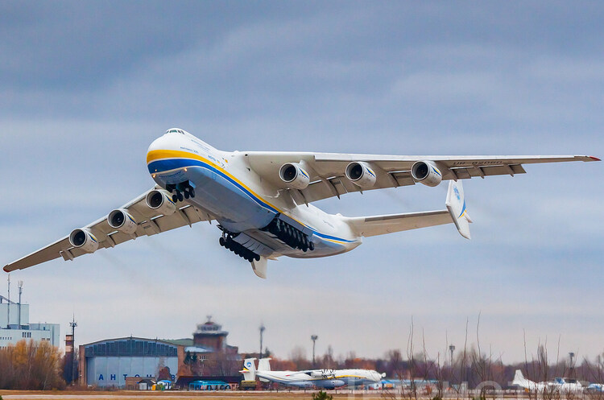

Цікаві факти про Україну

Пропонуємо кілька маловідомих, але цікавих фактів про нашу Батьківщину
увага! попередження всім путіністам1 .Європейський центр знаходиться саме в Україні - на ділянці гірської траси Рахів-Ужгород
а в якому бункері живе лошара - тисни тут2. Найбільший та найпотужніший у світі літак побудований в Україні
3. Людвіг ван Бетховен присвятив дві симфонії українцеві
4. Найдовший в світі музичний інструмент - українська трембіта
5. Різдвяну пісню українського композитора Леонтовича співає весь світ
...ну, а без цього героя ,я ніяк не можу завершити сьогоднішню підбірку